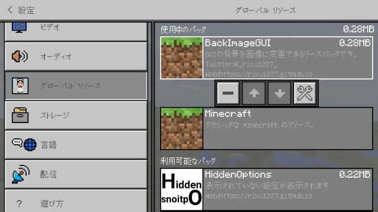
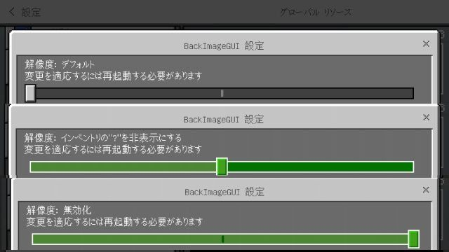

BackImageGUI
GUIの背景を画像に変更できるようになるリソースパックです
replaceモードやoverlayモードなどの画像置き換え時の挙動を変更することができます
機能
1.GUIの画像を画像に変更できるようになります
2._global_variables.jsonを編集することで画像置き換え時の挙動を変更できます
各種モード
replaceモード: GUIの背景を画像に置き換えます
overlayモード: 半透明(alpha:0.6)の画像をGUIの上に被せます(インベントリの画像を合成させる必要がありません)
backgroundモード: GUIの後ろに画像を置きます
disableモード: 画像を非表示にします
3.インベントリの"?"ボタンを非表示にする
動作環境
Minecraft : 1.2.13.60(で確認)
他のバージョンでも使用できる場合や使用できない場合があります
スクリーンショット


replaceモード時の作業台(角を丸くしたい場合は画像編集ソフトで角を編集してください)
ベースにR3DCraft 画像はアズールレーン(Azur Lane)のZ19を使用しています


overlayモード時の作業台(画像は適切なアスペクト比に切り抜く必要があります)
画像はアズールレーン(Azur Lane)のZ19を使用しています


backgroundモード時の作業台(画像は使用している端末の画面アスペクト比に合わせる必要があります)
画像はアズールレーン(Azur Lane)のZ19を使用しています(GUIで隠れてしまうため少し右にずらしています)

"?"ボタンを非表示にした時のインベントリ

_global_variables.jsonの中身 (ui/_global_variables.json)
リソースパックのサブパックの設定ボタン
サブパックの全設定
更新履歴
1.4.0
ベースのjsonを1.2.13.60に更新
選択したアイテムの名前を表示するように
3つ(デフォルト・インベントリの"?"非表示にする・無効化)のサブパックを追加
1.4.01.3.1
ベースのjsonを1.2.13.54に更新
1.3.11.3.0
ベースのjsonを1.2.10.2に更新
_global_variables.jsonを編集し画像置き換え時の挙動を変更できるように
replaceモードを追加
overlayモードを追加
backgroundモードを追加
disableモードを追加
replaceモード時GUIの白い背景が透明になるように
Chestに対応
startスクリーンのUIを変更
resolution.txtにアスペクト比を追加
1.3.01.2.2
クラフトのレシピ選択時所持していないアイテムのスロットが赤くならない不具合の修正
1.2.21.2.1
ベースのjsonを1.2.5.52に更新
インベントリを1.2.5スタイルに更新
金床のテキスト入力欄が半透明にならないようにした
ui_common.jsonを削除
背景画像を作らないGUIのjsonを削除すると通常のGUIが表示されるようにした
1.2.11.1.0
1.2.1.1でワールド編集・作成画面でゲームモードが変更できない不具合の修正
ラージチェストの背景画像化に対応
trade.pngが入っていなかったのを修正
resolution.txtを追加
1.1.01.0.0
初リリース
1.0.0